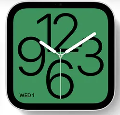
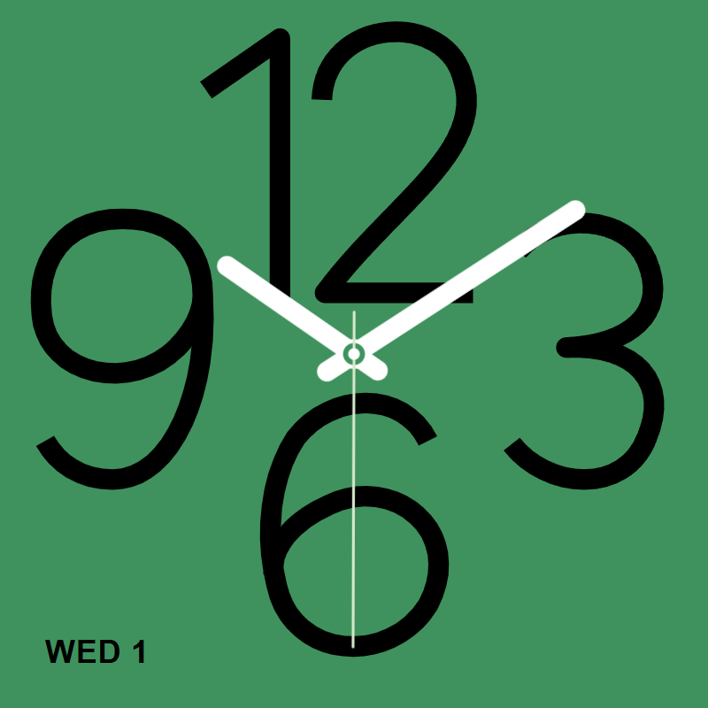

Watch Clock
Original supplied reference and the plugin's square rendering at the same displayed time.
The plugin fills the screen with the face colour. It draws no watch case. The SVG numerals are
original approximations, with no proprietary font dependency.

Supplied reference, including physical watch bezel

Plugin face · 800 × 800 · 10:09:30 · WED 1